Section 2.3: Advanced spectrum considerations for sample covariances
This page contains simulations in Section 2.3.
Contents
Section 2.3.1 Limiting spectrum
Theorem 2.9 (Silverstin and Choi, 1995): study of the support of (the limiting spectrum of) sample covariance matrix  as well as its connection to the functional inverse 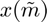
as well as its connection to the functional inverse 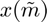
close all; clear; clc coeff = 3; p = 100*coeff; n = 1000*coeff; c = p/n; eigs_C = [1,3,7]; eigs_C_diag = [eigs_C(1)*ones(p/3,1); eigs_C(2)*ones(p/3,1); eigs_C(3)*ones(p/3,1)]; C = diag(eigs_C_diag); % population covariance Z = randn(p,n); X = C^(1/2)*Z; SCM = X*(X')/n; %%% sample covariance matrix and its empirical spectral measure eigs_SCM = eig(SCM); edges=linspace(min(eigs_SCM)-.1,max(eigs_SCM)+.1,100); clear i y = 1e-5; zs = edges+y*1i; mu = zeros(length(zs),1); tilde_m=0; for j=1:length(zs) z = zs(j); tilde_m_tmp=-1; while abs(tilde_m-tilde_m_tmp)>1e-6 tilde_m_tmp=tilde_m; tilde_m = 1/( -z + 1/n*sum(eigs_C_diag./(1+tilde_m*eigs_C_diag)) ); end m = tilde_m/c+(1-c)/(c*z); mu(j)=imag(m)/pi; end figure %%% limiting versus empirical spectral measure of SCM hold on histogram(eigs_SCM,edges, 'Normalization', 'pdf'); plot(edges,mu,'r', 'Linewidth',2); legend('Empirical eigenvalues', 'Limiting spectrum', 'FontSize', 15) x = @(tilde_m, eigs_C) -1./tilde_m + c*( eigs_C(1)./(1+eigs_C(1)*tilde_m)/3 + eigs_C(2)./(1+eigs_C(2)*tilde_m)/3 + eigs_C(3)./(1+eigs_C(3)*tilde_m)/3 ); %%% functional inverse tilde_ms = linspace(-2,1,1000); for eig_C = [eigs_C,0] tol = eps; tilde_ms(tilde_ms<=-1/eig_C+tol & tilde_ms>=-1/eig_C-tol)=NaN; end figure %%% corresponds to Figure 2.4 hold on p1 = plot(tilde_ms, x(tilde_ms,eigs_C), 'r'); p2 = xline(-1/eigs_C(1),'--k'); xline(-1/eigs_C(2),'--k'); xline(-1/eigs_C(3),'--k'); p3 = plot(zeros(p,1),eigs_SCM,'xb'); yline(0,'--k'); xline(0,'--k'); axis([-2 1 -2 12]) %%% set different axis limits, to see for instance when tilde_m >0 xlabel('$\tilde m$', 'Interpreter', 'latex'); ylabel('$x(\tilde m)$', 'Interpreter', 'latex'); legend([p1 p2 p3], {'$x(\tilde m)$', '$-\frac1{\tilde m} \in supp(\nu)$', 'empirical eigenvalues of SCM'},... 'Interpreter', 'latex', 'Location', 'northwest', 'FontSize', 15);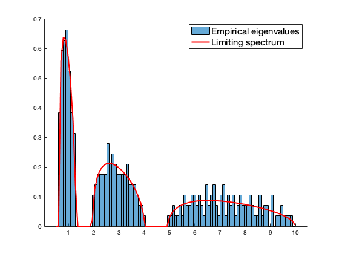 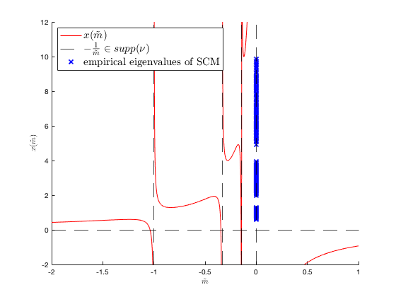
Section 2.3.1 Limiting spectrum (continuation)
Variable change: relating 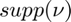 and 
study of the function  that maps 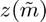 to 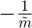 and in particular, the exclusion region that cannot be reached by
that maps 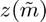 to 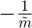 and in particular, the exclusion region that cannot be reached by 
close all; clear; clc coeff = 3; p = 100*coeff; n = 1000*coeff; % p = 200*coeff; % n = 100*coeff; c = p/n; eigs_C = [ones(p/3,1); 3*ones(p/3,1); 5*ones(p/3,1)]; C = diag(eigs_C); Z = randn(p,n); X = C^(1/2)*Z; SCM = X*(X')/n; eigs_SCM = eig(SCM); clear i y_min = -1; y_max = 1; x_min = -1; x_max = 10; % x_max = 30; zs1 = (x_max:-0.1:x_min) + y_max*1i; zs2 = x_min + (y_max:-0.1:y_min)*1i; zs3 = (x_min:0.1:x_max) + y_min*1i; zs4 = x_max + (y_min:0.1:y_max)*1i; zs = [zs1, zs2, zs3, zs4]; %%% contour Gamma_mu circling around the (limiting) support mu gamma_zs = zeros(length(zs),1); tilde_m=0; for j=1:length(zs) z = zs(j); tilde_m_tmp=-1; while abs(tilde_m-tilde_m_tmp)>1e-6 tilde_m_tmp=tilde_m; tilde_m = 1/( -z + 1/n*sum(eigs_C./(1+tilde_m*eigs_C)) ); end gamma_zs(j)= -1/tilde_m; end figure subplot(2,1,1) hold on plot(zs,'r','Linewidth',2) plot(eigs_SCM,zeros(p,1),'xk') yline(0,'k'); xline(0,'k'); axis([-2 11 -2 2]) % axis([-2 30 -2 2]) xlabel('$\Re[z]$', 'Interpreter', 'latex') ylabel('$\Im[z]$', 'Interpreter', 'latex') legend('Typical contour $\Gamma_\mu$ (of $z$)', 'Empirical spectrum of SCM', 'Interpreter', 'latex') subplot(2,1,2) hold on plot(gamma_zs, 'r', 'Linewidth',2) plot(eigs_C,zeros(p,1),'xk'); yline(0,'k'); xline(0,'k'); axis([-2 11 -2 2]) % axis([-5 25 -6 6]) xlabel('$\Re[-1/\tilde m(z)]$', 'Interpreter', 'latex') ylabel('$\Im[-1/\tilde m(z)]$', 'Interpreter', 'latex') legend('Typical contour $\Gamma_\nu$ (of $-1/\tilde m(z)$)', 'Support of $\nu$' , 'Interpreter', 'latex')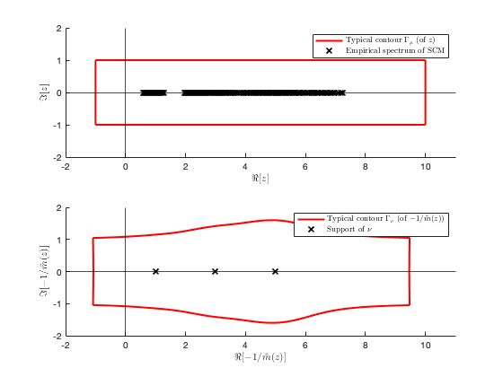
Section 2.3.2 "No eigenvalue outside the support"
Theorem 2.10 (Bai and Silverstin, 1998): Study the behavior of SCM eigenvalues that possibly "escapes" from the limiting support 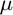
close all; clear; clc coeff = 6; p = 100*coeff; n = 1000*coeff; c = p/n; eigs_C = [1,3,7]; eigs_C_diag = [eigs_C(1)*ones(p/3,1); eigs_C(2)*ones(p/3,1); eigs_C(3)*ones(p/3,1)]; C = diag(eigs_C_diag); %%% population covariance nu_student = 3; %%% degrees of freedom nu of Student's t distribution Z1 = randn(p,n); Z2 = trnd(nu_student,p,n)/sqrt(nu_student/(nu_student-2)); X1 = C^(1/2)*Z1; X2 = C^(1/2)*Z2; SCM1 = X1*(X1')/n; %%% Gaussian SCM SCM2 = X2*(X2')/n; %%% Student's t SCM eigs_SCM1 = eig(SCM1); eigs_SCM2 = eig(SCM2); edges1=linspace(min(eigs_SCM1)-.1,max(eigs_SCM1)+.2,100); edges2=linspace(min(eigs_SCM2)-.1,max(eigs_SCM2)+.2,100); clear i y = 1e-5; zs = edges1+y*1i; mu = zeros(length(zs),1); tilde_m=0; for j=1:length(zs) z = zs(j); tilde_m_tmp=-1; while abs(tilde_m-tilde_m_tmp)>1e-6 tilde_m_tmp=tilde_m; tilde_m = 1/( -z + 1/n*sum(eigs_C_diag./(1+tilde_m*eigs_C_diag)) ); end m = tilde_m/c+(1-c)/(c*z); mu(j)=imag(m)/pi; end figure subplot(2,1,1) hold on histogram(eigs_SCM1,edges1, 'Normalization', 'pdf'); plot(edges1,mu,'r', 'Linewidth',2); title('Gaussian SCM') legend('Empirical eigenvalues', 'Limiting spectrum', 'FontSize', 12) subplot(2,1,2) hold on histogram(eigs_SCM2,edges2, 'Normalization', 'pdf'); plot(edges1,mu,'r', 'Linewidth',2); legend('Empirical eigenvalues', 'Limiting spectrum', 'FontSize', 12) title('Student-t SCM')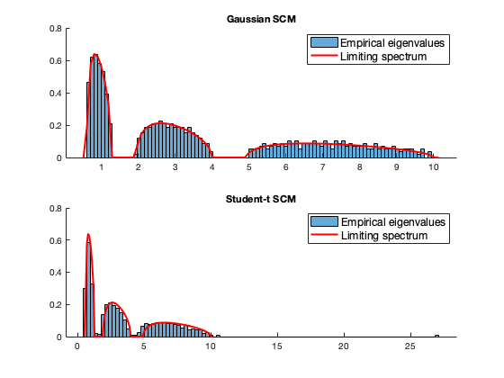